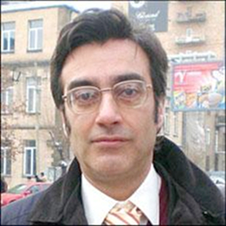

ПОСЛЕСЛОВИЕ К «ГРАНТУ»
Читателю сайта «Южнокавказская интеграция: Альтернативный старт»
Это счастье — написать что-то и быть прочитанным, услышанным, оценённым. Тем более счастье, когда пишешь не для денег, и не про то, про что все пишут. Если ради гонорара и его уже выплатили — то какая разница, прочли или нет? За эти годы я много писал, и ради гонорара, и просто потому, что не писать не могу, но как-то отвык быть прочитываемым, получать это модное словечко — фидбэк, что по-аглицки означает «кормёжка обратно», т.е. обратная связь.
Это и правда кормёжка обратно. Может, я её и получал до данной публикации, но это — как в сексе: сколько ни получай, каждый раз как будто в первый раз.
Несмотря на новые времена, я знал, что где-то есть читатели, что они ещё где-то сохранились, что они где-то ютятся, на каких-то тайных сайтах бывают, что-то там себе почитывают — но не знал, как можно до них добраться.
Так что спасибо Вам Всем, и тем, кто прочёл и написал, и тем, кто прочёл и мне просто сказал, и тем, кто молча прочёл. Особое спасибо тем, кто прочёл до конца, как бы Вас ни было мало. Для Вас-то я это и писал. И спасибо этому сайту, чьи руководители предложили мне опубликовать повесть на ней, и я тут же, почему-то, согласился. Видимо, потому, что пока ещё никто, кроме них, мне этого не предлагал. Ну и правильно. Первый пришел—первый получил, опять-таки говорят англо-американцы.
И я не прогадал: повесть прочли, заметили. Прочли в Армении и на всём Кавказе. Неожиданно, удивительно впору пришлись тема повести и тема сайта, хотя, казалось бы, фигура Гранта к общекавказской тематике столь же близка, сколь и, скажем, к тематике общеевропейской. Но это соответствие Гранта и Кавказа для меня не неожиданность. Волею судьбы пришлось мне много лет заниматься проблемами и конфликтами Кавказа. Я влюбился в весь Кавказ тогда, в каждый его кусочек, и северный, и южный. И тогда я понял, что я — армянин-кавказец. Не европеец, не ближнеазиат, а кавказец. Это спорное утверждение для многих, но я это понял. И верю, что Кавказ — един. И проблема его — в том именно, что с помощью несознательных наших граждан его кусочки тянут каждый к себе. Ибо—боятся: объединись Кавказ — и мир бы переменился слишком сильно.
Как бы то ни было, объединение Кавказа ещё далеко. Но не очень. А то, что повесть прочли кавказцы, в различных его уголках живущие — радует глубоко. Значит, интерес друг к другу есть. Я горд, что повесть прочли также и в Азербайджане. Повесть (или хотя бы его часть) прочли люди различных социальных слоёв, судеб, профессий. Это заставляет меня становиться ответственнее, чем я был до того.
Теперь о мнениях: спасибо всем за критику. За обозначение фактических ошибок. Так как это мемуар, там ошибок особых нет по жанру, или всё — ошибка: но спасибо за ловлю и вытаскивание на свет божий фактических ачипяток, как, скажем, 1750 вместо 2750... Спасибо также всем, кто свои дополнительные воспоминания при мне вспомнил, мне предложил в ответ на повесть. Есть куски из этих воспоминаний, которые стоило бы вот точно так же, как и писалась данная повесть, сесть и записать. Спасибо за идею повести про город, про Ереван, по стопам Орхана Памука: идея эта принадлежит одному бизнесмену, который вначале желал спонсировать ее, затем отказался от идеи спонсорства, но идея сохранилась. Про каждое разрушенное здание в Ереване, и тем более про каждое неразрушенное, про каждый уголок каждого дома, каждой улочки, можно написать роман, и есть люди, чьи воспоминания достойны, чтобы в такой энциклопедический роман вылиться. Спасибо за поддержку и за то, что критика была не убийственной. Ответить читателям по отдельности я не смогу. Фильм «Арарат» легко на дивиди найти, скажем, в Москве на Савёловском рынке (там армяне-пираты кустуются, пока Майкрософт их к ногтю не прижал), главное — чтобы копия была смотрибельной.
В письменном виде спор по поводу какого-либо из тезисов повести я бы очень заценил. Например: умирает ли интеллигенция как класс, или нет? Или есть у неё ещё какая-то миссия на свете, кроме дутой (сохранять устои культуры)? Или: как можно построить общий Кавказ, несмотря на взаимную ненависть (и на ненависть своих же соплеменников к тем, кто такую идею может сегодня высказать всерьёз)?
И спасибо Гранту. Высказываний его, которые лично слышал, несмотря на 200 страниц повести, я только половину в ней изложил. Уж не говоря о глубине его прозы, которая остаётся неисчерпаемой. И пусть служит путеводной нитью для тех, кто понять хочет себя, нас, армян, Кавказ, мир.
Геворг Тер-Габриелян
07-05-08
Это счастье — написать что-то и быть прочитанным, услышанным, оценённым. Тем более счастье, когда пишешь не для денег, и не про то, про что все пишут. Если ради гонорара и его уже выплатили — то какая разница, прочли или нет? За эти годы я много писал, и ради гонорара, и просто потому, что не писать не могу, но как-то отвык быть прочитываемым, получать это модное словечко — фидбэк, что по-аглицки означает «кормёжка обратно», т.е. обратная связь.
Это и правда кормёжка обратно. Может, я её и получал до данной публикации, но это — как в сексе: сколько ни получай, каждый раз как будто в первый раз.
Несмотря на новые времена, я знал, что где-то есть читатели, что они ещё где-то сохранились, что они где-то ютятся, на каких-то тайных сайтах бывают, что-то там себе почитывают — но не знал, как можно до них добраться.
Так что спасибо Вам Всем, и тем, кто прочёл и написал, и тем, кто прочёл и мне просто сказал, и тем, кто молча прочёл. Особое спасибо тем, кто прочёл до конца, как бы Вас ни было мало. Для Вас-то я это и писал. И спасибо этому сайту, чьи руководители предложили мне опубликовать повесть на ней, и я тут же, почему-то, согласился. Видимо, потому, что пока ещё никто, кроме них, мне этого не предлагал. Ну и правильно. Первый пришел—первый получил, опять-таки говорят англо-американцы.
И я не прогадал: повесть прочли, заметили. Прочли в Армении и на всём Кавказе. Неожиданно, удивительно впору пришлись тема повести и тема сайта, хотя, казалось бы, фигура Гранта к общекавказской тематике столь же близка, сколь и, скажем, к тематике общеевропейской. Но это соответствие Гранта и Кавказа для меня не неожиданность. Волею судьбы пришлось мне много лет заниматься проблемами и конфликтами Кавказа. Я влюбился в весь Кавказ тогда, в каждый его кусочек, и северный, и южный. И тогда я понял, что я — армянин-кавказец. Не европеец, не ближнеазиат, а кавказец. Это спорное утверждение для многих, но я это понял. И верю, что Кавказ — един. И проблема его — в том именно, что с помощью несознательных наших граждан его кусочки тянут каждый к себе. Ибо—боятся: объединись Кавказ — и мир бы переменился слишком сильно.
Как бы то ни было, объединение Кавказа ещё далеко. Но не очень. А то, что повесть прочли кавказцы, в различных его уголках живущие — радует глубоко. Значит, интерес друг к другу есть. Я горд, что повесть прочли также и в Азербайджане. Повесть (или хотя бы его часть) прочли люди различных социальных слоёв, судеб, профессий. Это заставляет меня становиться ответственнее, чем я был до того.
Теперь о мнениях: спасибо всем за критику. За обозначение фактических ошибок. Так как это мемуар, там ошибок особых нет по жанру, или всё — ошибка: но спасибо за ловлю и вытаскивание на свет божий фактических ачипяток, как, скажем, 1750 вместо 2750... Спасибо также всем, кто свои дополнительные воспоминания при мне вспомнил, мне предложил в ответ на повесть. Есть куски из этих воспоминаний, которые стоило бы вот точно так же, как и писалась данная повесть, сесть и записать. Спасибо за идею повести про город, про Ереван, по стопам Орхана Памука: идея эта принадлежит одному бизнесмену, который вначале желал спонсировать ее, затем отказался от идеи спонсорства, но идея сохранилась. Про каждое разрушенное здание в Ереване, и тем более про каждое неразрушенное, про каждый уголок каждого дома, каждой улочки, можно написать роман, и есть люди, чьи воспоминания достойны, чтобы в такой энциклопедический роман вылиться. Спасибо за поддержку и за то, что критика была не убийственной. Ответить читателям по отдельности я не смогу. Фильм «Арарат» легко на дивиди найти, скажем, в Москве на Савёловском рынке (там армяне-пираты кустуются, пока Майкрософт их к ногтю не прижал), главное — чтобы копия была смотрибельной.
В письменном виде спор по поводу какого-либо из тезисов повести я бы очень заценил. Например: умирает ли интеллигенция как класс, или нет? Или есть у неё ещё какая-то миссия на свете, кроме дутой (сохранять устои культуры)? Или: как можно построить общий Кавказ, несмотря на взаимную ненависть (и на ненависть своих же соплеменников к тем, кто такую идею может сегодня высказать всерьёз)?
И спасибо Гранту. Высказываний его, которые лично слышал, несмотря на 200 страниц повести, я только половину в ней изложил. Уж не говоря о глубине его прозы, которая остаётся неисчерпаемой. И пусть служит путеводной нитью для тех, кто понять хочет себя, нас, армян, Кавказ, мир.
Геворг Тер-Габриелян
07-05-08
Кавказский Центр Миротворческих Инициатив
© Ассоциация Текали - info@southcaucasus.com